Wie löse ich Matheaufgaben?
Trigonometrie
Sie sehen ein gelbes Eingabefeld und die
Schalter: Prüfen und Lösung.
Tragen Sie Ihr Ergebnis ein, prüfen Sie es
oder starten Sie eine Lösung.
Aufgabe 1
α = 40° und a = 2,5 cm. Wie groß ist c?
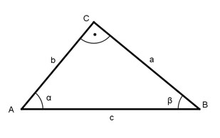
Aufgabe 2
α = 55° und c = 7 cm. Wie groß ist a?
a = cmAufgabe 3
β = 44° und a = 3,5 cm. Wie groß ist c?
Aufgabe 4
Wie groß ist α, wenn c = 7 cm und b = 4,2 cm?
α = °Aufgabe 5
Wie groß sind die restlichen Seiten, wenn α = 35° und c = 7 cm?
Aufgabe 6
Wie groß sind die restlichen Seiten, wenn β = 78° und b = 17 cm?
c = cmAufgabe 7
Wie groß sind β und b, wenn a = 6,7 cm und c = 8,3 cm?
Aufgabe 8
Wie groß sind die Ankathete von α und die Hypotenuse, wenn α = 75° und seine Gegenkathete 9 cm lang ist?
Hypotenuse = cmAufgabe 9
Die Gegenkathete des Winkels α ist 5 cm lang, seine Ankathete 8,5 cm. Wie groß ist α?
Aufgabe 10
Wie groß sind die restlichen Seiten und Winkel,
wenn β = 30° und
c = 83 cm?
Aufgabe 11
Wie groß ist die Strecke AB?
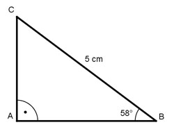
Aufgabe 12
Wie groß ist der Winkel α?
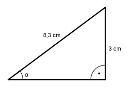
α = °Aufgabe 13
Wie groß sind die restlichen Seiten?
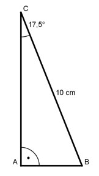
Aufgabe 14
Wie groß sind AB und der Winkel α?
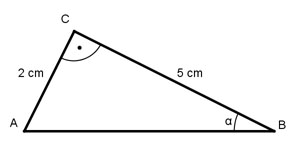
α = °Aufgabe 15
Wie groß sind AB und der Winkel α?
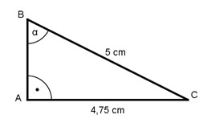
Aufgabe 16
Wie groß ist AB in dem gleichschenkligen Dreieck?
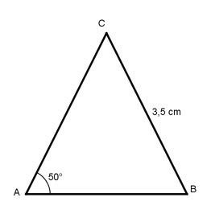
AB = cmAufgabe 17
Ein Quadrat hat eine Seitenlänge von 5,8 cm. Wie groß ist seine Diagonale d?

Aufgabe 18
Die Seiten eines Dreiecks sind 5,4 cm, 7,2 cm und 9 cm lang. Wie groß sind seine Winkel?
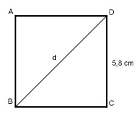
β = °Aufgabe 19
Wandeln Sie um in Grad:
5° 36' 12'' 41° 38' 3''Aufgabe 20
32,28° = 32° ' ''
4,83° = 4° ' 48 ''Aufgabe 21
Rechnen Sie um in das Bogenmaß: 301° 17' ; 212° 39' ; 120°.
Aufgabe 22
Wie groß sind c und b, wenn α = 36°27' und a = 29,63 cm?
b = cmAufgabe 23
Wie groß sind a und c, wenn α = 67°38' und b = 25,42 cm?
Aufgabe 24
Wie groß sind a und b, wenn α = 48°12'15'' und c = 31,2 cm?
a = cmAufgabe 25
Berechnen Sie die Fläche A des gleichschenkligen Dreiecks.
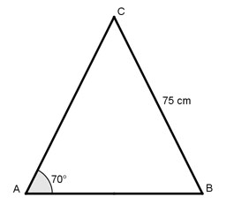
Aufgabe 26
Berechnen Sie die Fläche A des regelmäßigen Neunecks.
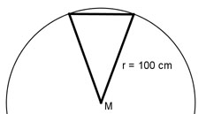
A = cm2Aufgabe 27
Ein regelmäßiges 36-Eck hat eine Fläche von 7875 cm2. Wie groß ist der Radius r seines Umkreises?
Aufgabe 28
Berechnen Sie p, wenn r = 20 m und α = 20°.
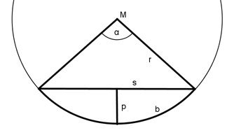
p = mAufgabe 29
Berechnen Sie p. wenn r = 20 m und s = 15 m.
Aufgabe 30
Berechnen Sie p, wenn r = 20 m und b = 40 m.
p = mAufgabe 31
Um wie viel cm ist der Bogen b länger als die Sehne s?
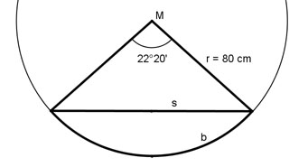
Aufgabe 32
Wie groß ist das schraffierte Kreissegment A?
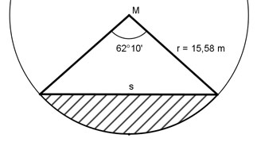
A = m2Aufgabe 33
Wie groß sind der Inkreisradius ri und der Umkreisradius ru des gleichschenkligen Dreiecks?
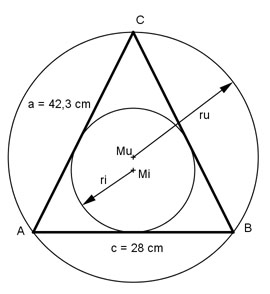
Aufgabe 34
Berechnen Sie a, b und c.
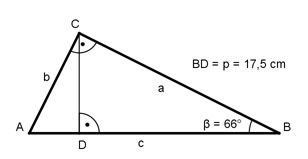
b = cmAufgabe 35
Berechnen Sie a, b und c.
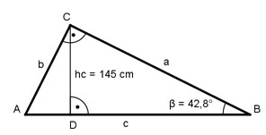
Aufgabe 36
Berechnen Sie a, b und c.
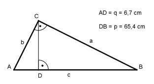
a = cmAufgabe 37
Berechnen Sie β, b und c.
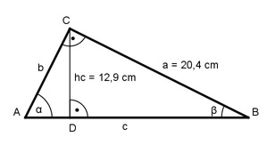
Aufgabe 38
Berechnen Sie α, a und b.
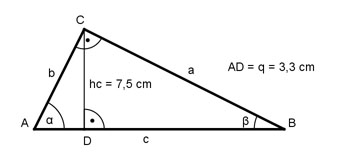
b = cmAufgabe 39
Berechnen Sie α, a und c.
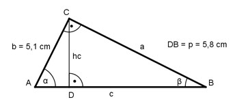
Aufgabe 40
Wie groß ist α in dem gleichschenkligen Dreieck?
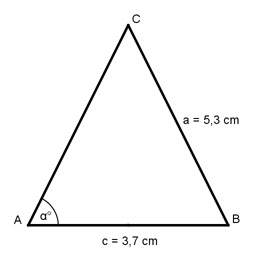
α = °Aufgabe 41
Berechnen Sie den Schnittwinkel ε der beiden Diagonalen.
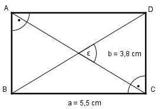
Aufgabe 42
Berechnen Sie den Schnittwinkel ε der beiden Diagonalen.
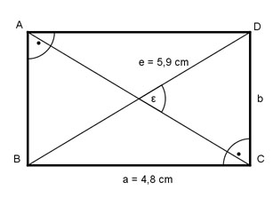
ε = °Aufgabe 43
Wie groß sind die Seiten a und b des Rechtecks?
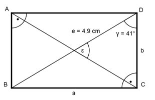
Aufgabe 44
Wie groß sind die Seiten a und b des Rechtecks?
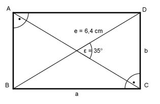
a = cmAufgabe 45
Wie groß sind die Seiten a und b des Rechtecks?
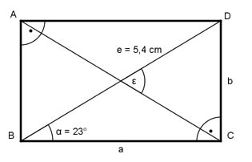
Aufgabe 46
Wie groß sind die Diagonalen e und f der Raute?
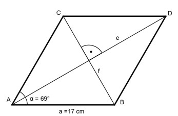
e = cmAufgabe 47
Wie groß ist die Diagonale e der Raute?
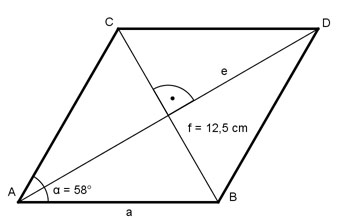
Aufgabe 48
Wie groß ist die Diagonale e der Raute?
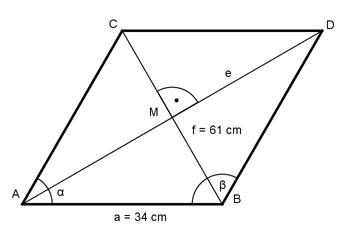
e = cmAufgabe 49
Wie groß sind die Diagonale f und die Seite a der Raute?
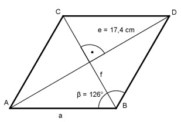
Aufgabe 50
Wie groß ist die Seite a der Raute?
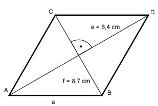
a = cmAufgabe 51
Wie groß ist die Diagonale f der Raute?
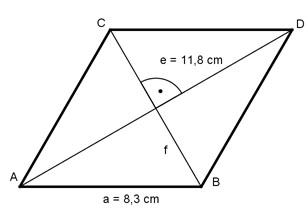
Aufgabe 52
Wie groß sind die Diagonalen e, f und der Winkel β des Drachens?
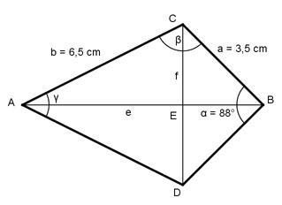
β = °Aufgabe 53
Berechnen Sie die Länge der Seite b des gleichschenkligen Trapezes.
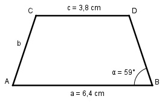
Aufgabe 54
Wie groß sind die Länge s der Sehne und deren Abstand d vom Mittelpunkt.
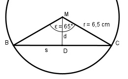
s = cmAufgabe 56
Wie groß sind der Mittelpunktswinkel ε und der Abstand d der Sehne s vom Mittelpunkt?
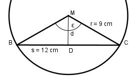
Aufgabe 56
Wie groß sind der Mittelpunktswinkel ε und der Radius r?
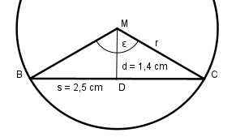
ε = °Aufgabe 57
Wie groß sind die Winkel α und β in dem Würfel?
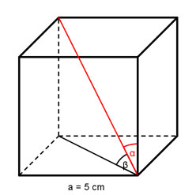
Aufgabe 58
Wie groß sind die Winkel α, β und γ?
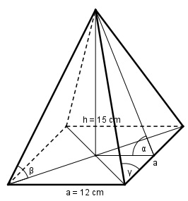
γ = °Aufgabe 59
Wie groß sind s und α?
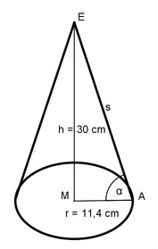
Aufgabe 60
Wie groß sind s und γ?
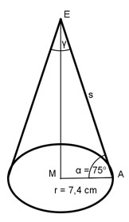
γ = °Aufgabe 61
Wie groß sind von einer regelmäßigen sechsseitigen Pyramide mit einer Grundseite a von 14 cm und einer Höhe h von 24 cm der Neigungswinkel α der Seitenflächen, der Neigungswinkel β der Seitenkanten gegen die Grundfläche und der Winkel γ an der Spitze eines Manteldreiecks?
Aufgabe 62
Wie groß sind h, β und γ?
h = cmAufgabe 63
Wie groß ist der Winkel γ zwischen den an den Kreis gelegten Tangenten?
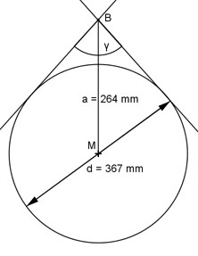
zurück